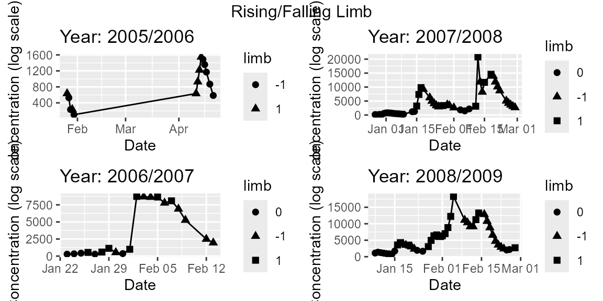
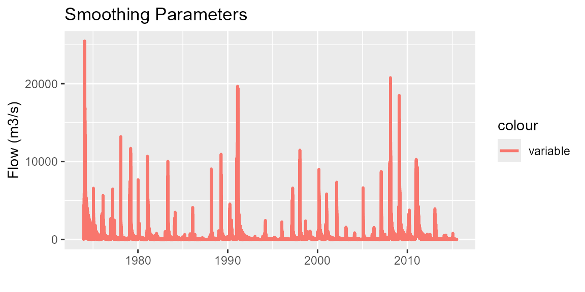
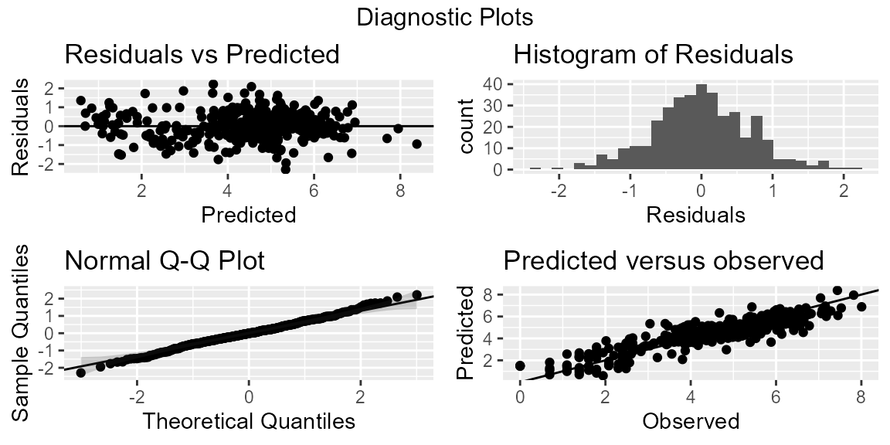
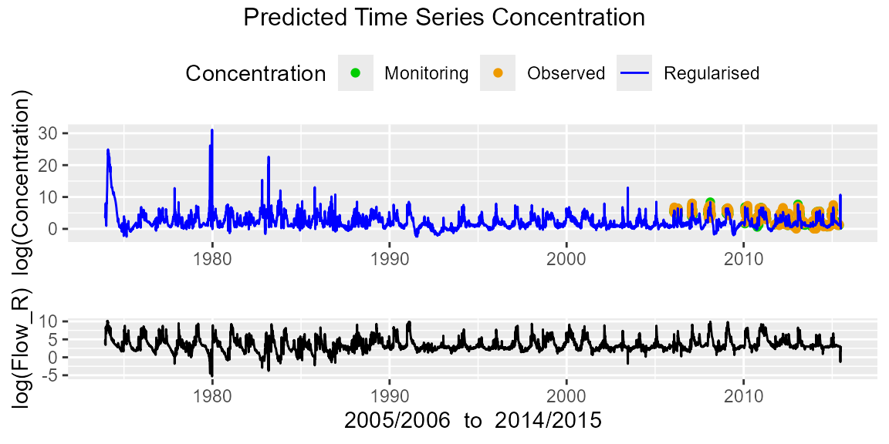
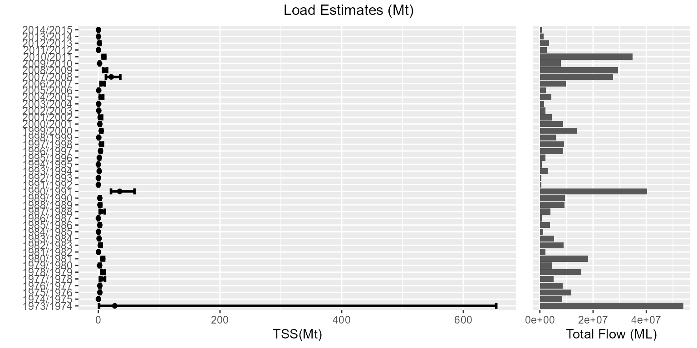
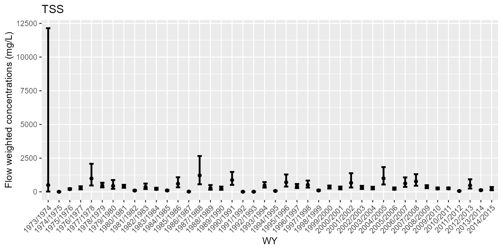

vignettes/LRE-vignette.Rmd
LRE-vignette.RmdLRE is a tool for quantifying loads with uncertainties (Kuhnert et al. 2012). The tool uses a generalized additive modelling approach to relate concentration to flow and other terms in the model that mimic hydrological relationships of the complex river system being modelled.
The LRE methodology comprises four steps:
The Inkerman Bridge site in the Burdekin catchment drains water into the Great Barrier Reef (GBR) lagoon from an area 300,000 square kilometres in area. Courtesy from the Queensland State Government (DSITI) we have flow and total suspended sediment (TSS) data. Flow data consists of daily measurements (cumecs) spanning December 1973 through to June 2015. Concentration data consists of daily measurements (mg/L) spanning January 2006 through to June 2016.
The LRE package is used to
Below are a series of steps for calculating the load in R using the LRE package.
There are a couple of different ways of getting your data into R for analysing with the LRE package.
The function ReadInData reads in a concentration and flow dataset as two separate .csv datasets. The name of the csv files should be common to both files with the extension _C and _Q referencing the concentration and flow files respectively. An example below reads in ‘BurdRdaily’ which is housed in the extdata directory within the LRE package.
# Version 1: Read In Burdekin data from an external file
burd <- ReadInData(dirnm = system.file("extdata", package = "LRE"), filenm = "/BurdRdaily", Cnames = "TSS",
format = "%Y-%m-%d")An alternative version reads in the flow and concentration data using the ReadInDataFromR function and assumes that both flow and concentration objects are R bojects stored with the R package.
# Version 2: burdRC and burdRQ are already stored as part of the package
burd <- ReadInDataFromR(x.C = burdRC, x.Q = burdRQ)
plot(burd)## Warning: Removed 32 rows containing missing values or values outside the scale range
## (`geom_point()`).
summary(burd)## Flow Data:
## ---------
## Flow Collection Period: From 1973-12-02 to 2015-06-30
## No. of records: 15186 Average sampling frequency: 1 days
## Flow: min=0 max=25482.8
## percentiles: 25th (10) 50th (22) 75th (74.17) 90th (451.99) 95th (1377.12) 97.5th (2906.43) 99th (6488.2)
## median=21.51
## mean=302.26
##
## Concentration Data:
## -------------------
## Pollutant: TSS
## Concentration Collection Period: From 2006-01-26 to 2016-06-23
## No. of records: 461 Average sampling frequency: 713927 secs
## Concentration: min=1 max=3060
## percentiles: 25th (28) 50th (135) 75th (313) 90th (451.99) 95th (812) 97.5th (1545) 99th (2304)
## median=135
## mean=264.49
hist(burd)Before fitting the Generalized Additive Model or GAM we need to create a ‘regularised’ dataset, whereby a dataset of flow is created for a regular time interval e.g. daily. In addition to flow, additional terms that mimic the hydrological relationships inherent in many flow systems are also created at the daily time step. The inputs to the CreateData function are
Below is an example where regularization was not required as flow data was available at the daily time step.
date.rangeM <- c("1973-12-02", "2015-06-30")
date.rangeP <- c("1973-12-02", "2015-06-30")
loaddata <- CreateData(Q = burd$Q, Conc = burd$Conc,
date.range = list(model = date.rangeM, pred = date.rangeP, hour = FALSE),
samp.unit = "day", Ytype = "WY", Qflush = 0.9,
Reg = list(type = "none", rainfall = NULL, date = NULL))We can then produce some exploratory plots to investigate the hydrological processes within the system.
## [1] "p_RiseFallLimb" "p_DistSum" "p_CQsum" "p_SmoothParms"
# Rising Falling Limb
regplots$p_RiseFallLimb
# Distributional Summary
regplots$p_DistSum
# Flow and Concentration summary
regplots$p_CQsum
# Smooth parameters
regplots$p_SmoothParms
Plots can also be saved using the ggsave function, which is part of the ggplot2 package. Note, all plots are produced using the ggplot2 package in R.
# Save output as a pdf file
ggsave("p_SmoothParms.pdf", regplots$p_SmoothParms)We can also produce some summaries of the regularized data. These summaries include a table outlining the bias in concentration and flow samples, broken up by water type (either water year (WY) or financial year (FY)) and a distributional summary of flow sampling to indicate the nature of the flow sampling undertaken.
summary(loaddata)## Bias in flow and concentration sampling:
## Year n AvgFlowC AvgFlowR AvgFlowO FlowC.bias FlowQ.bias
## 1 1973/1974 NA NA 2057.60410 2057.60410 NA 1
## 2 1974/1975 NA NA 264.52109 264.52109 NA 1
## 3 1975/1976 NA NA 374.91938 374.91938 NA 1
## 4 1976/1977 NA NA 272.58740 272.58740 NA 1
## 5 1977/1978 NA NA 165.90277 165.90277 NA 1
## 6 1978/1979 NA NA 493.41670 493.41670 NA 1
## 7 1979/1980 NA NA 145.24868 145.24868 NA 1
## 8 1980/1981 NA NA 575.67087 575.67087 NA 1
## 9 1981/1982 NA NA 67.75941 67.75941 NA 1
## 10 1982/1983 NA NA 280.63198 280.63198 NA 1
## 11 1983/1984 NA NA 170.57724 170.57724 NA 1
## 12 1984/1985 NA NA 38.01298 38.01298 NA 1
## 13 1985/1986 NA NA 119.32072 119.32072 NA 1
## 14 1986/1987 NA NA 20.82907 20.82907 NA 1
## 15 1987/1988 NA NA 125.83615 125.83615 NA 1
## 16 1988/1989 NA NA 291.20616 291.20616 NA 1
## 17 1989/1990 NA NA 296.43897 296.43897 NA 1
## 18 1990/1991 NA NA 1277.56067 1277.56067 NA 1
## 19 1991/1992 NA NA 16.77969 16.77969 NA 1
## 20 1992/1993 NA NA 17.58636 17.58636 NA 1
## 21 1993/1994 NA NA 92.83138 92.83138 NA 1
## 22 1994/1995 NA NA 24.56647 24.56647 NA 1
## 23 1995/1996 NA NA 68.40040 68.40040 NA 1
## 24 1996/1997 NA NA 275.21871 275.21871 NA 1
## 25 1997/1998 NA NA 286.82611 286.82611 NA 1
## 26 1998/1999 NA NA 190.50413 190.50413 NA 1
## 27 1999/2000 NA NA 437.95500 437.95500 NA 1
## 28 2000/2001 NA NA 277.96023 277.96023 NA 1
## 29 2001/2002 NA NA 142.22841 142.22841 NA 1
## 30 2002/2003 NA NA 66.36333 66.36333 NA 1
## 31 2003/2004 NA NA 47.94674 47.94674 NA 1
## 32 2004/2005 NA NA 137.24775 137.24775 NA 1
## 33 2005/2006 14 824.3909 69.75343 69.75343 11.818643 1
## 34 2006/2007 20 3633.2679 309.77088 309.77088 11.728888 1
## 35 2007/2008 47 4513.8394 869.72241 869.72241 5.189977 1
## 36 2008/2009 44 5459.2125 930.75820 930.75820 5.865339 1
## 37 2009/2010 40 1335.2939 251.97980 251.97980 5.299210 1
## 38 2010/2011 94 2654.2267 1104.36741 1104.36741 2.403391 1
## 39 2011/2012 53 151.2060 82.44307 82.44307 1.834066 1
## 40 2012/2013 24 578.1959 108.83642 108.83642 5.312522 1
## 41 2013/2014 25 128.4263 46.64155 46.64155 2.753474 1
## 42 2014/2015 16 147.4887 32.15938 32.15938 4.586180 1
##
##
## Calculating quantiles from long term flow record with user defined cutoff.
## No. of samples in the upper 2 percentile of flow: 72 (19% of samples collected)
##
## Distribution of flow sampling:
## <25%ile 25%ile-50%ile 50%ile-75%ile 75%ile-90%ile 90%ile-95%ile
## 0.27 2.39 14.06 20.42 18.04
## 95%ile-98%ile 98%ile-99%ile >99%ile
## 25.73 7.43 11.67A generalized additive model (GAM) can be fit to a log-transformed regularized dataset. The FitModel function fits a GAM using the mgcv package. While the gam function within mgcv can be used to fit the model directly, the FitModel function makes the implementation easier as the user just needs to specify what terms can be fit in the model (e.g. flow, seasonal, rising-falling limb (RFlimb), moving average (MA) terms, a trend term and autocorrelation through an AR1 process. Note, care should be taken when fitting trend terms in models, particularly their interpretation. The correlation term is fit using a generalized additive mixed model using the gamm function in the mgcv package and may take a considerable time to fit if correlation = TRUE.
Tip 1: When attempting to fit a GAM using the FitModel function, start with setting all parameters (apart from the trend and correlation arguments) to TRUE. Investigate the significance of the terms through the p-value and omit any terms, one by one, that are not significant starting with the terms that have the highest p-value. This approach is otherwise known as backward elimination. The model below is a result of a backward elimination process.
mod1 <- FitModel(x = loaddata$CQ, parms = list(flow = "quadratic", seasonal = TRUE,
RFlimb = FALSE,
MA = c(MA1day = FALSE, MA2days = FALSE,
MAweek = TRUE, MAmonth = TRUE,
MA6months = TRUE, MA12months = TRUE),
trend = FALSE, correlation = FALSE))## Fitting a Generalized Additive Model ...
summary(mod1)##
## Family: gaussian
## Link function: identity
##
## Formula:
## log(Conc) ~ LQflow(pQ, quad = TRUE) + s(month, bs = "cc") + NULL +
## NULL + NULL + s(MAweek, bs = "cr") + s(MAmonth, bs = "cr") +
## s(MA6months, bs = "cr") + s(MA12months, bs = "cr") + NULL
##
## Parametric coefficients:
## Estimate Std. Error t value Pr(>|t|)
## (Intercept) 10.54076 1.75035 6.022 4.53e-09 ***
## LQflow(pQ, quad = TRUE)1 -3.09315 0.54688 -5.656 3.32e-08 ***
## LQflow(pQ, quad = TRUE)2 0.30669 0.04213 7.280 2.40e-12 ***
## ---
## Signif. codes: 0 '***' 0.001 '**' 0.01 '*' 0.05 '.' 0.1 ' ' 1
##
## Approximate significance of smooth terms:
## edf Ref.df F p-value
## s(month) 5.462 8.000 1.911 0.008361 **
## s(MAweek) 9.000 9.000 7.453 < 2e-16 ***
## s(MAmonth) 6.771 7.207 2.063 0.046206 *
## s(MA6months) 8.942 8.995 3.367 0.000558 ***
## s(MA12months) 8.672 8.945 3.391 0.000622 ***
## ---
## Signif. codes: 0 '***' 0.001 '**' 0.01 '*' 0.05 '.' 0.1 ' ' 1
##
## R-sq.(adj) = 0.779 Deviance explained = 80.3%
## GCV = 0.62409 Scale est. = 0.55481 n = 377
anova(mod1)##
## Family: gaussian
## Link function: identity
##
## Formula:
## log(Conc) ~ LQflow(pQ, quad = TRUE) + s(month, bs = "cc") + NULL +
## NULL + NULL + s(MAweek, bs = "cr") + s(MAmonth, bs = "cr") +
## s(MA6months, bs = "cr") + s(MA12months, bs = "cr") + NULL
##
## Parametric Terms:
## df F p-value
## LQflow(pQ, quad = TRUE) 2 44.35 <2e-16
##
## Approximate significance of smooth terms:
## edf Ref.df F p-value
## s(month) 5.462 8.000 1.911 0.008361
## s(MAweek) 9.000 9.000 7.453 < 2e-16
## s(MAmonth) 6.771 7.207 2.063 0.046206
## s(MA6months) 8.942 8.995 3.367 0.000558
## s(MA12months) 8.672 8.945 3.391 0.000622It is useful to check the fit and validity of your model through some diagnostic plots. The function diagnostic simplifies this process by producing two sets of figures. The first set (pD) produces 4 figures that allow the user to examine the fit of their model. The plots (from left to right) show a plot of
The second figure examines the auto-correlation function of the residuals (pacf). In this figure we hope to see a dampening out of correlations over at past lags (i.e. spikes in correlations at lags where the spikes fall within the 95% confidence intervals). In the figure below we observe some correlation ~0.3 at a lag of 1 but this diminishes at lags 2 and beyond.
mod1D <- diagnostic(mod1)
names(mod1D)## [1] "pD" "pacf"
# Diagnostic Plots
mod1D$pD
# ACF of residuals
mod1D$pacfIt is important to gain an understanding of the terms fit in the model and how they relate to concentration. We can obtain a marginal representation of each term in the model by plotting the output from the fit of the model housed in the R object mod1I. As we only fit MA terms and a seasonal term, we can only plot these terms.
## [1] "ppred" "pConc" "pConcInt"
# Investigate impact of MA terms
mod1I$pMA## NULL
# Investigate seasonal terms
mod1I$pSeas## NULLWe can also investigate the predicted concentration time series together with the regularized flow through the following plot.
# Investigate predicted concentration time series (with flow)
mod1I$ppred
Sometimes it is also useful to plot the predicted concentrations interactively and explore the predictions at different parts of the time series by zooming in and zooming out using your mouse. Here is an example using the ggplotly function which is part of the plotly package in R. Note, the code below is not run for this vignette.
We can form estimates of the load with uncertainties using the predictL function in R. Using this function we can output two types of predictions. The first is the loads (pL1), while the second set of estimates are the flow weighted concentrations (pFWC1). Each of these estimates are accompanyied by confidence intervals, where the width of the confidence interval is determined by the pvalue argument that the user sets. By default, the error in flow is assumed to be zero but can be set through the flow.error argument. Users can enter a coefficient of variation that reflects the measurement error (me) and/or the spatial error or positioning of the flow gauge (ce). Load estimates can be produced at the annual scale (type = annual) or daily scale (type = daily).
predLoad <- predictL(object = mod1, objfix = mod1$gam, x = loaddata, flow.error = list(me = 0, ce = 0),
samp.unit = "day", pvalue = 0.2)## [1] "pL1" "pFWC1"
# Annual loads
mod1pL$pL1
# Flow weighted concentrations
mod1pL$pFWC1
An interactive plot of the flow weighted concentrations can be called using the ggplotly function. Note, this is not run for the vignette.
# interactive flow weighted concentrations
ggplotly(mod1pL$pFWC1)Load estimates can be accessed from the predLoad object as follows. These can then be written to file using the write.csv function in R.
results <- predLoad$loadest
names(results)## [1] "annual" "daily"When there are gaps in the flow record, we need a methodology for infilling flow to form a regularized dataset. In LRE, there are two approaches for achieving this. The first uses a smoothing spline approach using the gam function in the mgcv package. The second approach uses quantile Random Forests to fit a model between flow and rainfall at different lags to develop a predictive model that is used to predict flow at records with missing data.
To illustrate the two approaches, we artificially exclude 100 consecutive records spanning the date ranges: 2004-01-13 to 2004-04-22. This dataset is called burdRNA.
Below is an example of infilling using smoothing splines.
date.rangeM <- c("2011-01-01", "2015-06-30")
date.rangeP <- c("2011-01-01", "2015-06-30")
loaddata <- CreateData(Q = burdRNA$Q, Conc = burdRNA$Conc,
date.range = list(model = date.rangeM, pred = date.rangeP, hour = FALSE),
samp.unit = "day", Ytype = "WY", Qflush = 0.9,
Reg = list(type = "ss"))Here is an example of infilling using quantile Random Forests.
date.rangeM <- c("2011-01-01", "2015-06-30")
date.rangeP <- c("2011-01-01", "2015-06-30")
loaddata <- CreateData(Q = burdRNA$Q, Conc = burdRNA$Conc,
date.range = list(model = date.rangeM, pred = date.rangeP, hour = FALSE),
samp.unit = "day", Ytype = "WY", Qflush = 0.9,
Reg = list(type = "qrforest", rainfall = burd_rain$Rainfall,
date = burd_rain$Date))Kuhnert, P.M., Henderson, B.L., Lewis, S.E., Bainbridge, Z.T., Wilkinson, S.N. and Brodie, J.E. (2012) Quantifying total suspended sediment export from the Burdekin River catchment using the loads regression estimator tool, Water Resources Research, 48, W04533,doi:10.1029/2011WR011080.